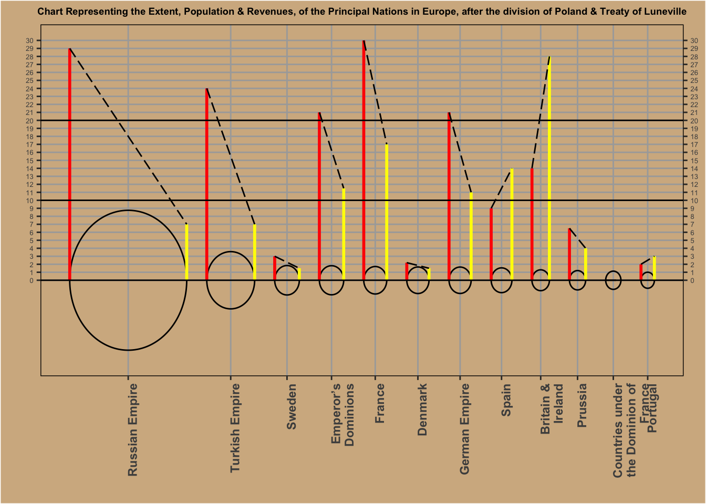
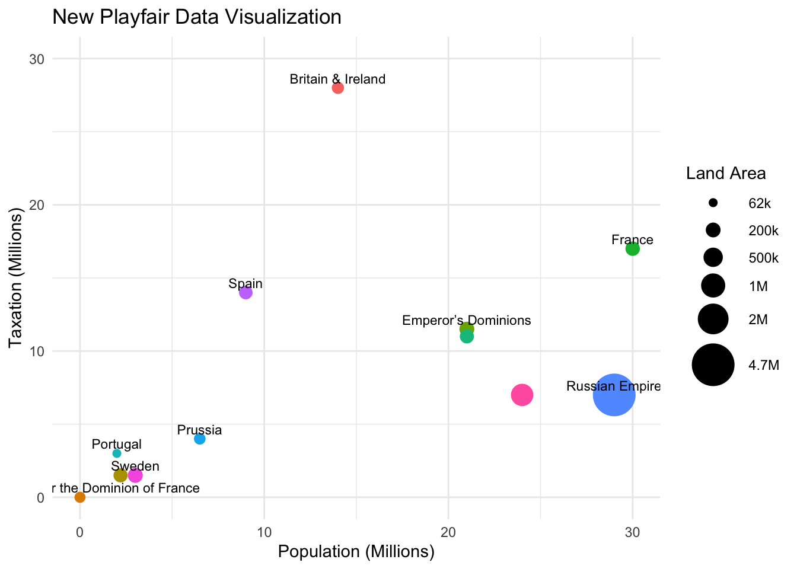

Code
knitr::include_graphics("pf.png")
Critiquing, recreating, and improving playfair’s famous graph
knitr::include_graphics("pf.png")
Playfair’s chart works well in several ways. First, it uses bars as a simple and effective visual representation to compare taxation and revenue across nations. The use of height to represent quantitative values allows viewers to easily see differences between nations. Additionally, the connecting line between the two bars allow for an easier comparison when looking at one specific county. The categorical arrangement of the nations by population size also helps in maintaining clarity and comparison. The use of circle size to represent population size is simple yet effective. The chart combines several forms of data in one visualization. Playfair’s introduction an effective method of showing patterns and trends visually. Despite its innovation, the chart has limitations that detract from its effectiveness. One of the main issues is the overloading of visual elements—having multiple variables in a single visual without clear legends. Without reading more about the graph, it is impossible to tell what is taxation and revenue. The pie charts inside the countries circles are too small to see. The Venn diagram is also extremely small and I had to zoom in to see it. All things considered, Playfair’s chart effectively communicates its purpose—to compare the economic and geographical standings of European nations. While there are some things that are not ideal in its ability to precisely communicate all the data elements, the chart’s innovative use of bars for comparison was groundbreaking for its time. It set the foundation for modern data visualization, even though it lacks some refinements that we would expect today especially in DATA324! # Part 2 - Recreation
library(tidyverse)
library(ggforce)
library(stringr) # str_wrap
europe <- read.csv("~/Downloads/playfair_european_nations.csv")
# Calculate radius
Radius <- (sqrt(europe$Area / 3.1459)) / 140 # Scale
# Dynamic center calculation
num_countries <- nrow(europe)
spacing <- 3
center <- numeric(num_countries) # Initialize
# Position of the first circle
center[1] <- 10
# Calculate the center positions based on the radius of the circles
for (i in 2:num_countries) {
center[i] <- center[i - 1] + Radius[i - 1] + Radius[i] + spacing
}
# Axisbreak based on the center
axisbreak <- unique(center)
# Wrapping x-axis labels
wrapped_labels <- str_wrap(europe$Country, width = 15)
Playfair <- ggplot(europe) +
geom_circle(aes(x0 = center, y0 = 0, r = Radius)) +
# Yellow line for Taxation
geom_segment(aes(x = center + Radius, xend = center + Radius, y = 0, yend = Taxation),
size = 1, color = "yellow") +
# Red line for Population
geom_segment(aes(x = center - Radius, xend = center - Radius, y = 0, yend = Population),
size = 1, color = "red") +
# Dashed line to connect red and yellow
geom_segment(aes(x = center - Radius, xend = center + Radius,
y = Population, yend = Taxation), linetype = "longdash") +
# Solid black lines at y = 0, 10, and 20
geom_hline(yintercept = c(0, 10, 20), color = "black", size = 0.5) +
# Apply wrapped labels and adjust x-axis text
scale_x_continuous(breaks = axisbreak, labels = wrapped_labels) +
# Set y-axis to display 0 to 30 with every integer as a tick mark
scale_y_continuous(
limits = c(-10, 30),
breaks = seq(0, 30, by = 1),
sec.axis = sec_axis(trans = ~ .,
breaks = seq(0, 30, by = 1)) # Add name for secondary axis
) +
# Custom old paper-like background
theme(
# Old paper color
panel.background = element_rect(fill = "#d3b58f"),
plot.background = element_rect(fill = "#d3b58f"),
panel.grid.major = element_line(color = "darkgrey", size = 0.5),
panel.grid.minor = element_blank(),
# Axis stuff
axis.text.x = element_text(angle = 90, face = "bold", hjust = 1),
axis.text.y = element_text(size = 5),
axis.text.y.right = element_text(size = 5),
plot.title = element_text(hjust = 0.5, size = 7, face = "bold"),
panel.border = element_rect(color = "black", fill = NA) # black border
) +
labs(title = "Chart Representing the Extent, Population & Revenues, of the Principal Nations in Europe, after the division of Poland & Treaty of Luneville", x = "", y ="")
Playfair
Recreation <- ggplot(europe, aes(x = Population, y = Taxation)) +
geom_point(aes(col = Country, size = Area)) +
ylim(c(0, 30)) +
labs(title = "New Playfair Data Visualization",
y = "Taxation (Millions)",
x = "Population (Millions)",
size = "Land Area",
color = "Country") +
scale_size_continuous(breaks = c(62000, 200000, 500000, 1000000, 2000000, 4720000),
labels = c("62k", "200k", "500k", "1M", "2M", "4.7M"),
range = c(2, 12)) + # Better visibility
geom_text(aes(label = Country), # Data labels
vjust = -0.5, # Adjust vertical position
size = 3, # Size of the text
check_overlap = TRUE) +
guides(color = "none") + # Remove legend for Country
theme(legend.key = element_blank()) + # Remove legend background
theme_minimal()
Recreation
In creating this data visualization, I chose to map Population to the x-axis and Taxation to the y-axis. This allows viewers to easily observe the relationship between a country’s population size and its tax revenue, which is critical for understanding how population might influence taxation. Each point represents a different country that allows for a direct visual comparison across multiple nations. The choice to use size for the Area of each country is also significant. Larger countries are represented by larger points which enables viewers to quickly assess the relative land size of each nation with its population and taxation. The use of color to differentiate countries adds another layer of information, helping viewers quickly identify which point corresponds to which country. However, I opted to remove the color legend for Country to streamline the visualization and avoid clutter. Instead, I added data labels directly to the points, ensuring that viewers can easily discern which country each point represents. This decision supports clarity and allows for immediate identification without needing to look at a legend. In terms of design principles, I used a minimalist theme (using theme_minimal()), which eliminates unnecessary gridlines and distractions and helps the viewer’s attention on the data The vertical adjustment of text labels helps to ensure that country names do not overlap with the points as much. I also carefully selected the size breaks for the Area scale and used significant thresholds that correspond to the actual data values to avoid misleading interpretations. The breaks provide a clear representation of how land area varies among the countries and allow for a more intuitive understanding of size differences. The choice of colors could be more intentional by using a color palette that is colorblind friendly which could enhance accessibility. There are a few data labels that overlap and does not show in the graph. I would also add a footnote of where I got the data. My graph effectively illustrates that larger populations do not always correlate with higher taxation levels. This visualization aligns with Playfair’s assertion that visual data can reveal complex relationships that might not be immediately apparent through numerical data alone. Overall, the design choices made in this visualization work to highlight these relationships